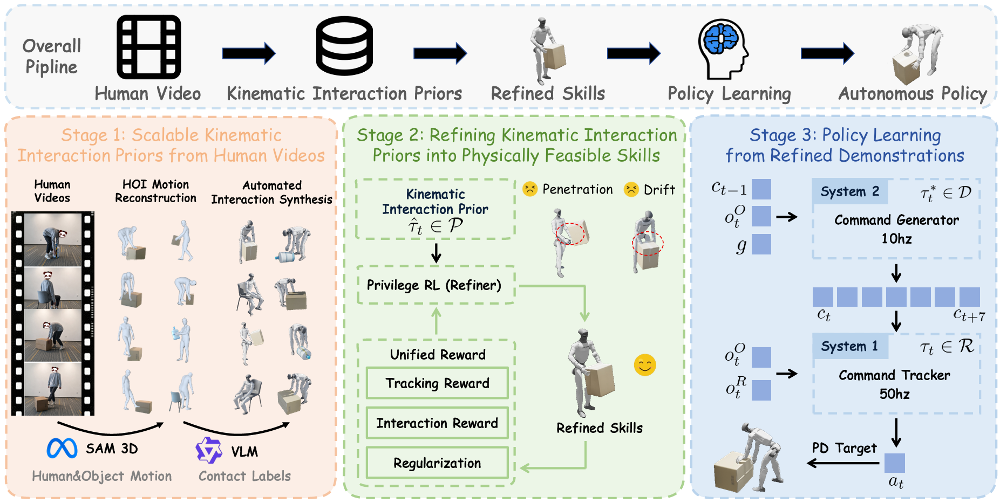

A Scalable Human-Video-Driven Generalizable
Humanoid Loco-Manipulation Learning Framework
Building humanoid robots that perform generalizable whole-body loco-manipulation in the real world remains a fundamental challenge: existing approaches either rely on heavy task-specific reward engineering, rigidly replay reference motions that fail to generalize, or depend on costly teleoperation that limits scalability. While human videos capture diverse human behaviors, the motion priors inferred from them are inherently imperfect, suffering from occlusion, contact artifacts, and retargeting errors that render them unsuitable for direct policy learning. To this end, we present SUGAR, a data-driven framework that converts diverse human videos into deployable humanoid loco-manipulation skills, without any task-specific reward engineering or reference-motion conditioning at inference.

SUGAR consists of three stages: (1) extracting kinematic interaction priors from unstructured human videos through a fully automated pipeline; (2) refining the priors into physically feasible skills with a privileged RL policy; and (3) training a hierarchical autonomous policy on the refined demonstrations for robust humanoid loco-manipulation.
Our method ensures stable long-horizon interaction even under significant external perturbations
and resumes tasks seamlessly after unexpected failures.
Our method achieves zero-shot generalization to unseen objects within the same categories.
Carry Box
Sit Chair (White)
Sit Chair (Black)
Kick Box